Android (Kotlin):
- HiddenGem är en innovativ applikation som kopplar samman matentusiaster med lokala restauranger av högsta betyg.
- Restaurangägare kan visa upp sina verksamheter, vilket gör det enkelt för användare att hitta dem.
- Plattformen erbjuder funktioner för konto skapande, inloggning och återställning av lösenord, samt en personlig profilsektion för individuella uppgifter.
- Under 'Business'-aktiviteten kan restaurangägare lägga till nya restauranger, medan 'Company'-sektionen är exklusiv för ägare att hantera och granska sina egna listningar.
- Denna tydliga uppdelning ger företagsägare bättre kontroll och exklusiv åtkomst till ytterligare funktioner i appen.
- För allmänheten erbjuder HiddenGem en interaktiv karta för att utforska och upptäcka restauranger.
- Användare kan läsa detaljerade recensioner, kommentera och dela sina matupplevelser genom att ladda upp bilder.
- Appen erbjuder användaranpassade inställningar för att växla mellan mörkt och ljust tema.
- En integrerad sökfält gör det enkelt att navigera genom ett stort urval av restaurangalternativ.
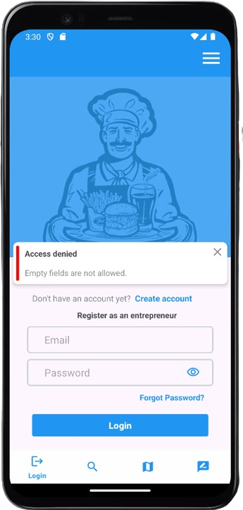
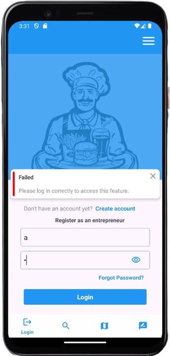
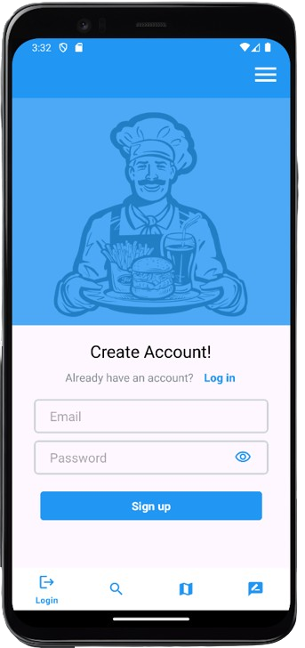
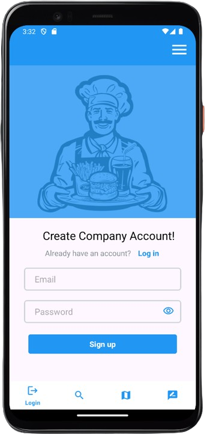
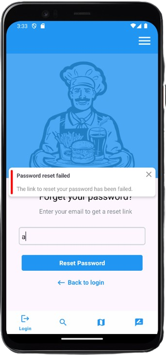
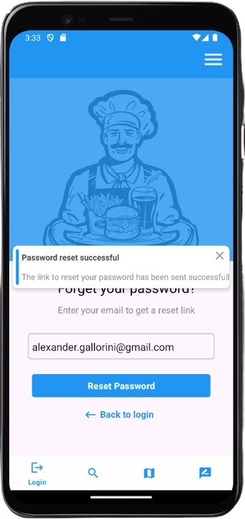
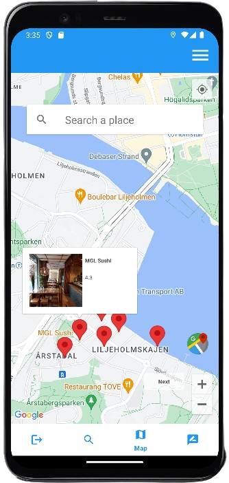
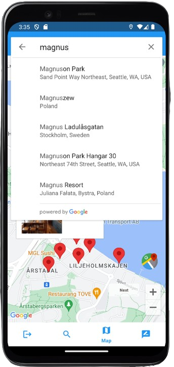
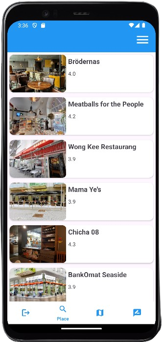
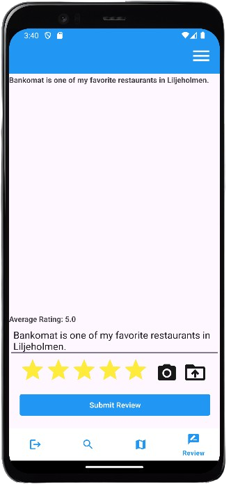
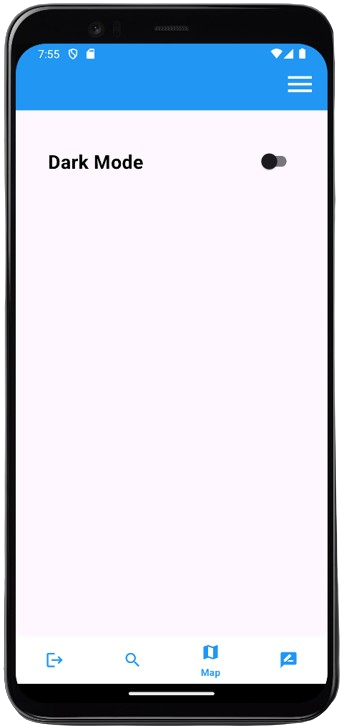
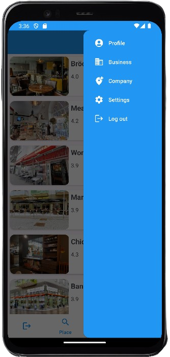
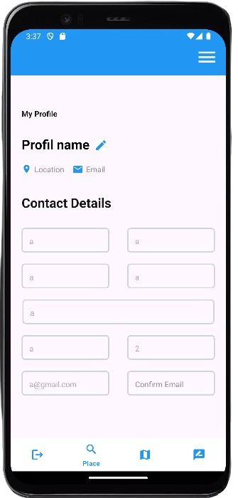
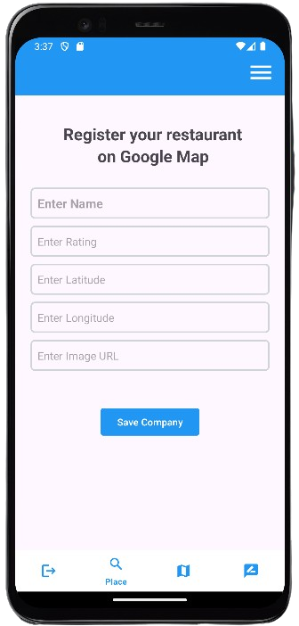
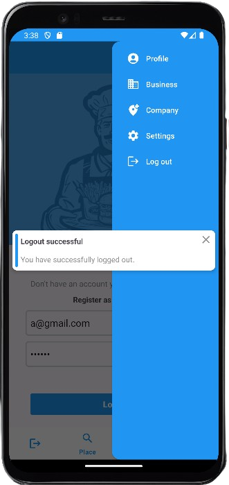